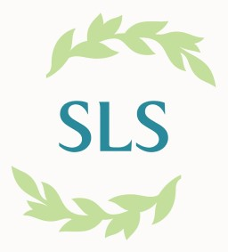

This overview is based on this XML output of the GLAMorous tool d.d. 01-03-2024.
It was generated using the GLAMorousToHTML code.
Also see the documentation of this tool.
This data is also available as an Excel file. More structured data formats (csv, json) will be added in the future.
Available languages
Swedish (115)
Finnish (79)
English (50)
Russian (34)
French (15)
Standard Estonian (15)
German (14)
Egyptian Arabic (13)
Nynorsk (7)
Tatar (7)
Italian (6)
Danish (5)
Dutch (5)
Spanish (5)
Ukrainian (5)
Arabic (3)
Bulgarian (3)
Polish (3)
Portuguese (3)
Catalan (2)
Czech (2)
Nynorsk (2)
Azerbaijani (1)
Basque (1)
Cebuano (1)
Chinese (1)
Eastern Armenian (1)
Erzya (1)
Esperanto (1)
Hebrew (1)
Latvian (1)
Persian (1)
Romanian (1)
Serbian (1)
Slovak (1)
Uzbek (1)
Swedish (115)
Aina_Lindfors |
Aklop |
Albert_Lichtenberg |
Alfred_Hedenstierna |
Algoth_Niska |
Alma_Berglund |
Alvar_Aalto |
Annie_Sundman |
Anton_Franck |
Axelina_Apelbom |
Benedict_Zilliacus |
Bernhard_Åström |
Billnäs |
Björn_Hasselblad |
Bonifacio |
Borrby,_Ormsö |
Broholmen |
Bror_Olsson_(skådespelare) |
Bror_Öbergson |
Bruno_Aspelin |
Bruno_Holm |
Carl_Adolf_Hårdh |
Carl_Johan_Fahlcrantz_(skådespelare) |
Carl_Lindgren |
Christoffer_Schildt |
Dagmar_Nyberg |
Dagmarkällan |
Döden_på_Nilen |
Eino_Kaila |
Eliel_Saarinen |
Emelie_Degerholm |
Ernst_Ahlbom |
Ernst_Malmström |
Ester_Niska |
Estlandssvenskar |
Feluck |
Finlandiahuset |
Finlands_svenska_folkdiktning |
Fredrik_Berndtson |
Georg_Grönroos |
Georg_Henrik_von_Wright |
Gustaf_Nessler |
Gustaf_Ullberg |
Göran_Schildt_(författare) |
Harald_Molander_(filmproducent) |
Harald_Sandberg_(skådespelare) |
Helge_Robert_Söderström |
Henry_Seemann |
Hjalmar_Frey |
Hullo |
Ibiza |
Iniö |
Jacques_Pulchau |
Johan_Ludvig_Runebergs_staty |
John_Gabriel_Borkman |
Josef_Fischer |
Josef_Herler |
Jussi_Snellman |
Kajsaniemiviken |
Klippan,_Helsingfors_stad |
Klovskär |
Korkis,_Estland |
Kärrslätt |
Lappträsk,_Sjundeå |
Lilla_Rågö |
Lorenz_von_Numers |
Lotta_Svärd-organisationen |
Louis_Verneuil |
Ludwig_Salvator_av_Toscana |
Mia_Gründer |
Mona_Morales-Schildt |
Nagu |
Neuer_Wall |
Norrménska_huset |
Nyländska |
Näsbyn,_Estland |
Ormsö |
Otti_Pegel |
Paolo_Venini |
Paulig |
Peníscola |
Petrus_Blomberg |
Pickala_gård |
Pontus_Hultén |
Portofino |
Ragnar_Josephson |
Rapallo |
Rurik_Ekroos |
Rälby |
Sadeln,_Ingå |
Saxby,_Ormsö |
Selma_Riégo |
Sigrid_Precht |
Sjundby |
Slăntjev_Brjag |
Spetses |
Spithamn |
Stora_Ensos_huvudkontor |
Stora_Rågö |
Svenska_litteratursällskapet_i_Finland |
Svenska_språköar_i_Finland |
Tallholmarna,_Hangö |
Transjordanien |
Ulf_Palme |
Vilhelm_Grefberg |
Vilhelm_Olin |
Villa_Kolkis |
Villa_Skeppet |
Vivica_Bandler |
William_Hammar |
William_Larsson |
Wohls_gård |
Åboländska |
Åländska |
Österbottniska
Finnish (79)
Adolf_Linderoos |
Ahvenanmaanruotsi |
Aina_Lindfors |
Albin_Krabbe |
Allan_Schulman |
Alma_Berglund |
Alppilan_hyppyrimäki |
Anna_Liisa |
Anna_Snellman-Kaila |
Annie_Sundman |
Anton_Franck |
Arthur_Fagerholm |
Axel_Precht |
Berndt_Lindahl |
Bruno_Aspelin |
Bruno_Böök |
Edith_Buemann_Psilander |
Eduard_Paulig |
Eliel_Saarinen |
Emelie_Degerholm |
Ernst_Ahlbom |
Espilä |
Ester_Borg |
Ester_Niska |
Eva_Gyldén_(kuvanveistäjä) |
Felukka |
Ferdinand_Laurent |
Fredrik_Berndtson |
Georg_Grönroos |
Graf_Zeppelinin_vierailu_Suomessa_1930 |
Gustaf_Nessler |
Helsingin_päärautatieasema |
Henry_Seemann |
Hjalmar_Frey |
Ivar_Anton_Bruno_Holm |
Johan_Ludvig_Runebergin_muistomerkki |
Kauppatori_(Helsinki) |
Kersleti |
Lallukan_talo |
Lappträsk_(Siuntio) |
Lorenz_von_Numers |
Luoto_(Helsinki) |
Mary_Hannikainen |
Meri_Roini |
Nauvo |
Ola_Brenner |
Onni_Savola |
Otto_Holmberg |
Pakrin_saaret |
Paolo_Venini |
Paulig |
Pikkalan_kartano |
Pohjanmaanruotsi |
Punaisenlähteentori |
Ragnar_Ypyä |
Rautatientori |
Runebergin_koti |
Rurik_Ekroos |
Selma_Riégo |
Sigrid_Precht |
Sigrid_Wickström-Paaer |
Siltasaari |
Sjundbyn_kartano |
Stora_Enson_vanha_pääkonttori |
Suomen_ulkopolitiikka |
Torkkeli_Knuutinpojan_patsas |
Turunmaanruotsi |
Uudenmaanruotsi |
Viipurin_kauppa-_ja_merenkulkuoppilaitos |
Viipurin_kauppatori |
Viipurin_vanha_raatihuone |
Vilhelm_Grefberg |
Villa_Skeppet |
Vironruotsalaiset |
Vormsi |
William_Hammar |
Wohls_gård |
Yrsa_Cannelin |
Zachris_Topelius
English (50)
Abdullah_I_of_Jordan |
Alliklepa |
Anna_Liisa |
Arioso_(Sibelius) |
Benjamin_I_of_Constantinople |
Blanche_d'Antigny |
Borrby,_Estonia |
Church_of_Saint_Irene,_Ios |
Dolmabahçe_Mosque |
Elsa_Bonsdorff |
Estonian_Swedes |
Felucca |
Göran_Schildt |
Harald_Molander |
Helsinki_Central_Station |
Holger_Reenberg |
Hullo |
Kersleti |
Kurkse |
Louis_Verneuil |
Market_Square,_Helsinki |
Mischa_Elman |
Mona_Morales-Schildt |
Nagu |
Neuer_Wall |
Pakri_Islands |
Paolo_Venini |
Paulig |
Pickala_Manor |
Portofino |
Rapallo |
Roles_played_by_Sarah_Bernhardt |
Rälby |
San_Fruttuoso_Abbey |
Saxby,_Estonia |
Siltasaari |
Sjundby_Manor |
Spetses |
Spithami |
Statue_of_Johan_Ludvig_Runeberg |
Sunny_Beach |
Swedish_dialects_in_Ostrobothnia |
Tharros |
Villa_Skeppet |
Vintse |
Vivica_Bandler |
Vormsi |
Walter_Runeberg |
William_Larsson |
Åland_dialects
Russian (34)
Paulig_Group |
Автомобильная_заправочная_станция |
Балтийские_шведы |
Блумквист,_Брюнольф |
Вокзальная_улица_(Выборг) |
Выборг |
Выборгская_ратуша |
Дом_Гроеля |
Дом_Лаллукки |
Дом_горожанина_(Выборг) |
Дом_купца_Маркелова |
Здание_коммерческого_и_навигационного_училища_в_Выборге |
Здание_компании_«Кулма» |
Здание_компании_«Отсо» |
Здание_компании_«Тапиола» |
Косой_переулок_(Выборг) |
Красная_площадь_(Выборг) |
Ленинградский_проспект_(Выборг) |
Ленинградское_шоссе_(Выборг) |
Медведь_(скульптура_в_Треугольном_сквере) |
Мунккиниеми |
Набережная_30-го_Гвардейского_Корпуса |
Памятник_Торгильсу_Кнутссону |
Парк_Ленина_(Выборг) |
Привокзальная_площадь_(Выборг) |
Прогонная_улица_(Выборг) |
Проспект_Ленина_(Выборг) |
Рыночная_площадь_(Выборг) |
Топелиус,_Сакариас |
Улица_Германа_Титова_(Выборг) |
Фонтан_с_медведем_(Выборг) |
Шульман,_Аллан |
Эспиля |
Юпюя,_Рагнар
French (15)
Alliklepa |
Blanche_d'Antigny |
Gare_centrale_d'Helsinki |
Gare_d'Oulunkylä |
Josef_Fischer_(acteur) |
Louis_Verneuil |
Luoto_(Helsinki) |
Paolo_Venini |
Paulig |
Petite_Pakri |
Siltasaari |
Viaduc_d'Auteuil |
Villa_Skeppet |
Zacharias_Topelius |
Îles_Pakri
Standard Estonian (15)
Alliklepa |
Borrby |
Hullo |
Kersleti |
Kurkse |
Rannarootslased |
Rälby |
Saxby |
Spithami |
Suur-Pakri |
Vihterpalu_mõis |
Vintse |
Vormsi |
Vormsi_Issanda_Ülestõusmise_kirik |
Väike-Pakri
German (14)
Alsterpavillon |
Borrby |
Fr._Meyer’s_Sohn |
Hullo |
Jarl_Hemmer |
Kersleti |
Mischa_Léon |
Neuer_Wall |
Pakri-Inseln |
Rälby |
Saxby_(Vormsi) |
Spithami |
Viaduc_d’Auteuil |
Vormsi
Egyptian Arabic (13)
الفريد_هيدينستيرنا |
الفيرا_دى_هيدالجو |
اوك_كلايسون |
بلانتش_دانتيجنى |
جوستا_ايكمن |
جيوليو_روسى |
ساكريس_توبيليوس |
لويس_فيرنويل |
مينى_ناست |
هارالد_مولاندر |
ويليام_لارسون_(مخرج_افلام) |
پولو_فينينى |
چارل_هيمير
Nynorsk (7)
Finland |
John_Gabriel_Borkman |
Louis_Verneuil |
Munksnäs |
Nøddebo_Præstegård_(skuespill) |
Robert_Dinesen |
Zacharias_Topelius
Tatar (7)
Алликлепа |
Боррбy |
Винтсе |
Керслети |
Курксе |
Сахбу |
Һулло
Italian (6)
Angelina_Fioretti |
Basilica_di_Saccargia |
Henry_Seemann |
Julia_Widgrén |
Louis_Verneuil |
Paolo_Venini
Danish (5)
Edith_Buemann_Psilander |
Henry_Seemann |
Holger_Reenberg |
Lauritz_Eckardt |
Zacharias_Topelius
Dutch (5)
Borrby_(Vormsi) |
Kersleti |
Kurkse |
Rälby |
Saxby
Spanish (5)
Edith_Buemann |
Holger_Reenberg |
Jussi_Snellman |
Louis_Verneuil |
William_Larsson
Ukrainian (5)
Боррбю |
Ельман_Михайло_Саулович |
Захаріас_Топеліус |
Мунккініемі |
Острови_Пакрі
Arabic (3)
ساكريس_توبيليوس |
هارالد_مولاندر |
ويليام_لارسون
Bulgarian (3)
Алексей_Апостол |
Долмабахче_джамия |
Пакри_(острови)
Polish (3)
William_Larsson |
Wyspy_Pakri |
Zacharias_Topelius
Portuguese (3)
Giulio_Rossi |
Mario_Vieira_de_Mello |
Zacharias_Topelius
Catalan (2)
Louis_Verneuil |
Zachris_Topelius
Czech (2)
Pakri |
Zachris_Topelius
Nynorsk (2)
Pakriøyane |
Zacharias_Topelius
Azerbaijani (1)
Pakri_adaları
Basque (1)
Zachris_Topelius
Cebuano (1)
Munkkiniemi
Chinese (1)
赫尔辛基集市广场
Eastern Armenian (1)
Զախարիաս_Տոպելիուս
Erzya (1)
Топелиус,_Сакариас
Esperanto (1)
Zacharias_Topelius
Hebrew (1)
זכריס_טופליוס
Latvian (1)
Pakri_salas
Persian (1)
لوتا_سورد
Romanian (1)
Insulele_Pakri
Serbian (1)
Пакри
Slovak (1)
Zachris_Topelius
Uzbek (1)
Dolmabahçe_masjidi